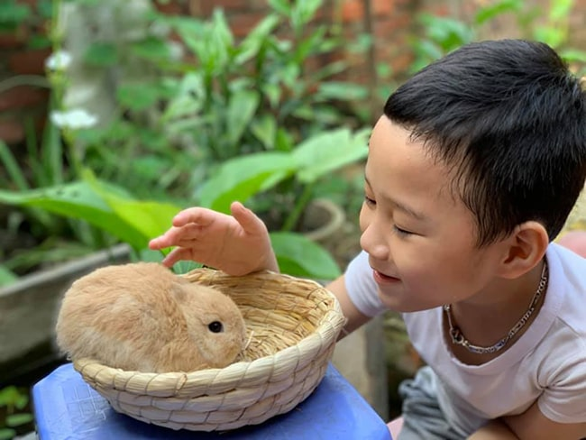

Hướng Dẫn Cách Nuôi Thỏ Trong Nhà Cho Người Mới Bắt Đầu
Khi mới bắt đầu nuôi thỏ kiểng chắc hẳn các bạn sẽ gặp nhiều khó khăn, bỡ ngỡ. Nhưng, thỏ kiểng là thú cưng rất đáng yêu, hiền lành, chúng chắc chắn sẽ mang đến cho bạn rất nhiều niềm vui khi có 1 bé thỏ cảnh trong nhà. Tuy nhiên, trước khi quyết định nuôi 1 bé thỏ kiểng, bạn hãy đảm bảo rằng bạn đã chuẩn bị mọi thứ để nuôi chúng trong điều kiện tốt nhất nhé. Hãy tham khảo bài viết Hướng dẫn nuôi thỏ kiểng cho người mới dưới đây nhé.
1. Chuẩn bị cho một bé thỏ kiểng mới trước khi mang chúng về nhà
Trước khi mang thỏ cảnh mới về nhà, bạn nên dành một chút thời gian để kiểm tra khu vực dự định sẽ cho chúng sinh sống. Cho dù bạn có ý định cho chú thỏ của mình sống trong nhà với bạn hay ngoài trời trong chuồng, điều quan trọng là khu vực đó phải sạch sẽ và không có bất kỳ mối nguy hiểm nào. Trong nhà, hãy chú ý đến ổ cắm, đồ đạc có thể gây nguy hiểm cho chúng hoặc thậm chí là những đồ gia dụng hàng ngày như chất tẩy rửa hoặc đồ chơi trẻ em có thể gây nguy hiểm cho thú kiểng của bạn.
1.1 Thỏ kiểng nuôi ngoài trời
Thỏ có thể sống rất tốt ở ngoài trời. Chúng thích không khí trong lành và thích chạy nhảy trong vườn nhà nếu có thể. Nếu bạn cho thỏ kiểng của bạn sống bên ngoài, bạn cần chuẩn bị một cái chuồng thỏ thật đẹp.
Thỏ thích chạy nhảy xung quanh và cần tập thể dục, vì vậy, ít nhất bạn hãy đảm bảo cho chú thỏ kiểng của bạn được chạy nhảy tại một khu vực nào đó.
Ngoài ra, cần có một khu vực có mái che để thỏ của bạn được tránh mưa, giữ ấm. Nếu bạn có nhiều hơn một chú thỏ kiểng, bạn cũng có thể cho chúng sử dụng chung một cái chuồng.
Một trong những mối nguy hiểm lớn nhất nếu bạn định nuôi thỏ bên ngoài là bị chó hoặc những con vật lớn hơn cắn chết, điều quan trọng là bạn phải đảm bảo nó được bảo vệ an toàn.
Nhớ khóa cửa chuồng vào ban đêm và để ý để đảm bảo không có kẽ hở trong hệ thống dây điện hoặc các vật sắc nhọn khác.
1.2 Thỏ kiểng nuôi trong nhà
Bạn có thể muốn chú thỏ kiểng của bạn tự do chạy nhảy trong nhà. Để giữ an toàn cho chúng, bạn cần đề phòng hệ thống dây điện và các vật dụng nguy hiểm khác mà thỏ có thể sẽ nhai.
Tốt nhất bạn nên chuẩn bị cho chúng một cái lồng trong nhà để ngủ và nhốt chú thỏ kiểng của bạn khi nhà có khách hoặc bạn cần nhốt chúng trong một thời gian.
Đặt khay vệ sinh bên trong lồng và nên bố trí các khay vệ sinh xung quanh nhà để thỏ có nhiều lựa chọn.
2. Vệ sinh đúng cách cho Thỏ kiểng
Một trong những việc quan trọng là bạn phải vệ sinh đúng cách cho thỏ cảnh. Việc làm sạch sẽ chuồng/lồng của thỏ kiểng thường xuyên là rất quan trọng, cần phải được làm sạch hàng ngày để tránh côn trùng, ruồi muỗi có thể tấn công thỏ kiểng của bạn.
Hầu hết thỏ sẽ sử dụng khay vệ sinh nếu bạn cung cấp cho chúng, nên việc chăm sóc, vệ sinh chuồng/lồng cho chúng cũng khá đơn giản.
3. Kiểm tra sức khỏe thỏ cảnh thường xuyên
Thỏ có thể được nhân giống và vận chuyển từ nhiều nơi vì vậy điều quan trọng là phải đảm bảo rằng thỏ của bạn khỏe mạnh. Kiểm tra sức khỏe kỹ lưỡng bao gồm:
- Kiểm tra lâm sàng kỹ lưỡng để xác định tình trạng sức khỏe chung của thỏ.
- Kiểm tra bộ lông của thỏ để kiểm tra ký sinh trùng hoặc da có bị bong tróc hay không.
- Tìm hiểu kỹ về các loại vắc xin mà bé thỏ cảnh của bạn sẽ cần và khi nào chúng nên được tiêm.
- Các chủ đề chăm sóc khác mà bạn có thể muốn thảo luận là chế độ ăn uống, chăm sóc răng miệng và tập thể dục.
4. Hướng dẫn cách chăm sóc chó trong việc ăn uống
Chế độ ăn uống là một yếu tố vô cùng quan trọng để giữ cho thỏ của bạn khỏe mạnh. Các chuyên gia khuyến khích chế độ ăn uống của chúng bao gồm:
- Viên cám khô, cỏ khô, các loại hạt dinh dưỡng.
- Các loại thực phẩm chức năng tăng cường sức đề kháng.
- Một phần ba lá rau xanh như bắp cải.
- Nước ngọt uống hàng ngày.
Thỏ cảnh thường thích ăn thức ăn viên hơn nên việc cung cấp một chế độ ăn uống cân bằng gần như không thể. Thỏ cần phải gặm nhấm để giữ cho những chiếc răng ngày càng phát triển của chúng bị mòn. Đây là điều mà chúng sẽ làm theo bản năng nên điều quan trọng là chúng phải có đủ cỏ khô để gặm.
5. Tạo không gian thoải mái cho thỏ cảnh
Để thỏ cảm thấy như đang ở chỗ quen thuộc của chúng, bạn nên nhẹ nhàng áp dụng cách xử lý nhạy cảm và tiếp xúc thân thiện ít nhất một giờ mỗi ngày. Sau đó, thỏ cảnh của bạn sẽ bắt đầu cảm thấy thoải mái hơn với bạn và ngôi nhà mới của mình.
Cho dù thỏ của bạn sống trong nhà hay ngoài trời, chúng phải luôn dễ dàng lui tới một nơi ẩn náu, nơi chúng có thể ẩn nấp nếu chúng giật mình. Chúng thường thích ngủ ở một nơi vắng vẻ và những lúc thời tiết nóng nực nên có sẵn bóng râm hoặc điều hòa mát. Nếu bạn có con nhỏ, hãy nhớ dạy chúng rằng thỏ không phải là đồ chơi và phải được đối xử nhẹ nhàng và tôn trọng.

6. Luôn giữ cho thỏ kiểng của bạn khỏe mạnh
Điều quan trọng là bạn phải chăm sóc bé thỏ kiểng mới của mình thật tốt. Mặc dù chúng có thể là thú cưng khá độc lập, nhưng bạn vẫn cần thời gian để ý đến chúng để giúp chúng an toàn và khỏe mạnh.
Nếu bạn lo lắng rằng thỏ cảnh của bạn không khỏe, tốt nhất là bạn nên tìm kiếm sự chăm sóc thú y sớm nhất. Thỏ được trang bị tốt để che giấu các dấu hiệu bệnh tật vì đây là hình thức tự bảo vệ trong môi trường hoang dã. Rất có thể vào thời điểm chúng xuất hiện các triệu chứng, chúng đã không khỏe lâu hơn như bạn nghĩ.
Thỏ đặc biệt dễ mắc các vấn đề về răng miệng và tiêu hóa nên nếu có bất kỳ thay đổi nào trong thói quen ăn uống hoặc đi vệ sinh của chúng, bạn nên xem xét để được tư vấn kịp thời. Bạn sẽ tìm thấy thêm thông tin về cách chăm sóc thỏ cảnh, hãy gọi cho chúng tôi theo số 0978 900 824 nếu bạn có bất kỳ câu hỏi nào.